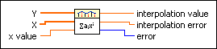

Polynomial Interpolation VI
Owning Palette: Interpolation & Extrapolation VIs
Requires: Full Development System
Interpolates or extrapolates the function f at x given a set of n points (x[i]y[i]), where f(x[i]) = y[i], f is any function, and given a number x value.

 Add to the block diagram Add to the block diagram |
 Find on the palette Find on the palette |